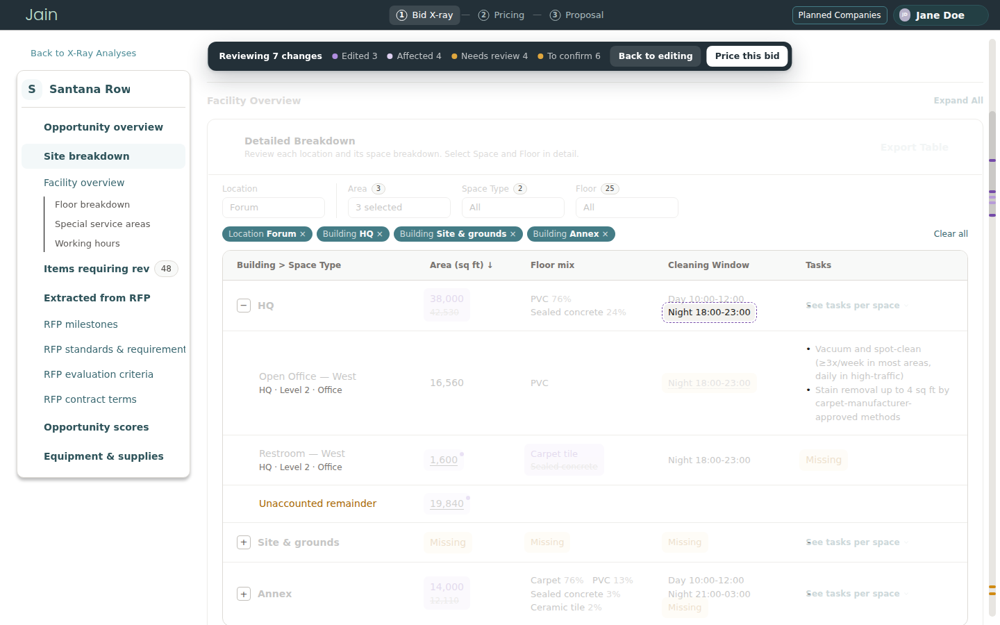
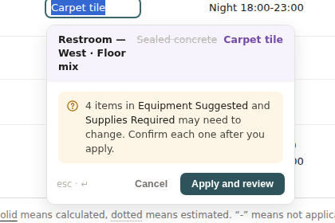
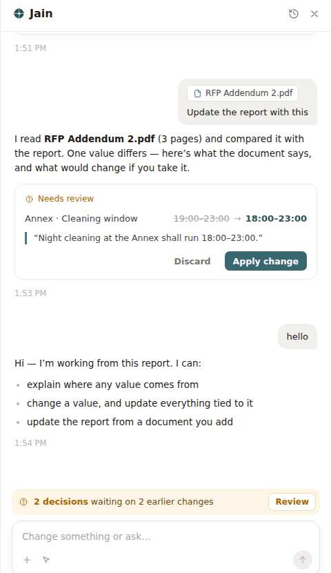
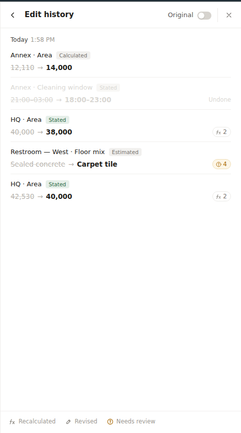
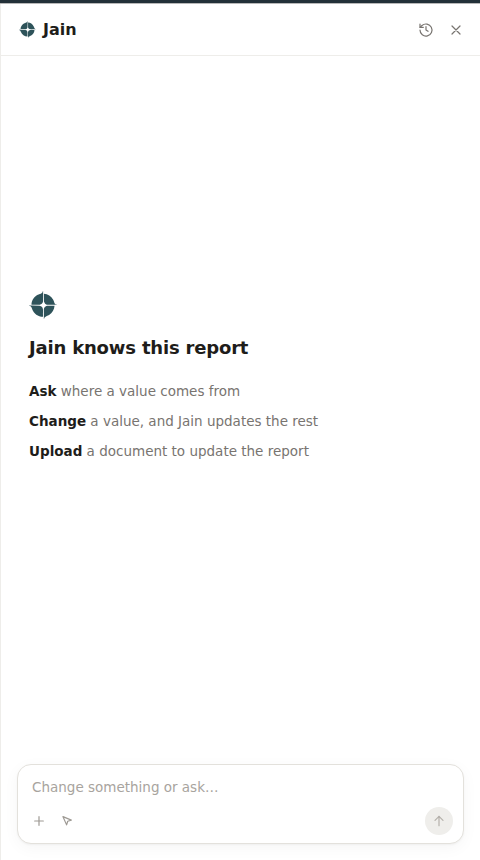
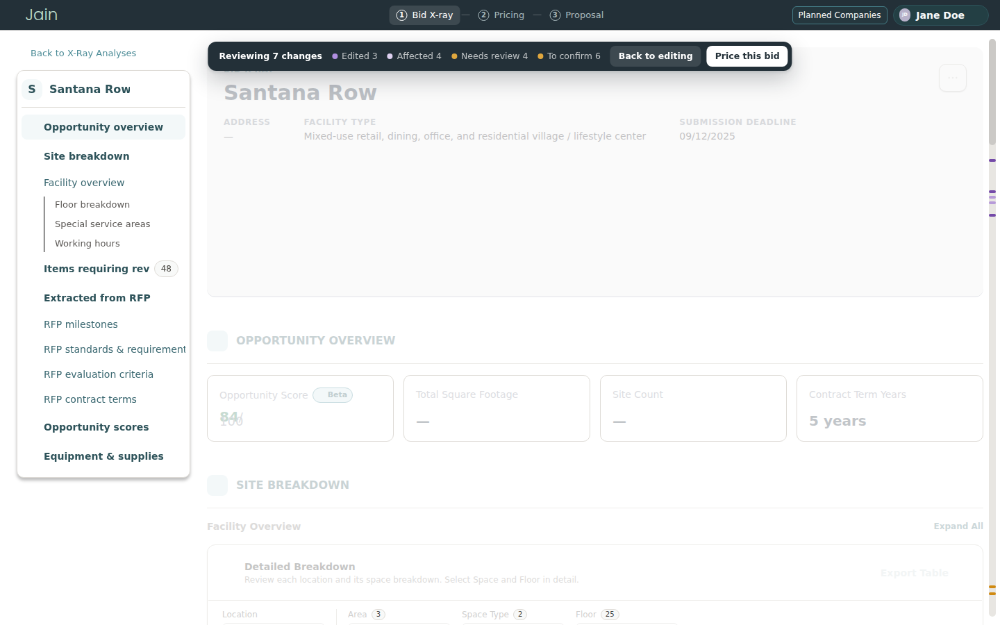
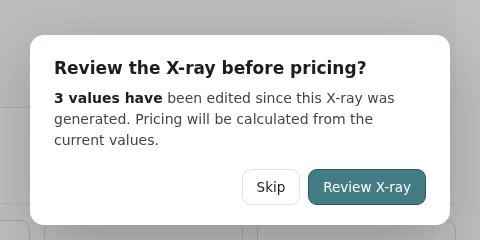

Turning complex RFPs into a trustworthy and editable workspace for bid evaluation
Jain is an AI bidding platform for janitorial contractors, built inside 25madison, a venture studio that builds companies from the ground up. I designed the human-in-the-loop layer that makes AI-generated RFP (Request for Proposal) analysis editable, so estimators can correct it, review it, and move to pricing with confidence.
From an ambiguous problem to a scoped 0→1 workflow
Defined the boundaries of AI
Set up an AI-native design workflow
- Every value is traceable to its source
- Every edit shows its ripple effects before it’s applied
- Jain stays quiet on recalculations and speaks only when users need to decide
- A review mode spotlights every edit and what it touched before pricing


The X-Ray is a draft, not an answer...
Jain reads an RFP in minutes, but RFPs have errors and gaps, so the report still needs a person to correct it.
...And every value depends on another
The bid X-Ray is one connected report: change one value and others have to change with it. Without a way to see and control that, estimators can’t trust the numbers they’re about to price on.
Trust first.
Edit second.
The job wasn’t just an editing feature. It was designing the confidence around it: what to change, what it affects, and what to rely on afterward. That meant five things.
- 01
Know the source
Every value shows whether it was stated in the RFP, estimated by Jain, or calculated.
- 02
Keep the person in charge
The AI acts only within a visible rule, and waits wherever judgment is needed.
- 03
See the consequences
What a change will move shows before it lands, and lights up after.
- 04
Nothing is lost
Every change stays on record, and any of them can be reversed.
- 05
Verified before pricing
Nothing reaches the price unchecked, and every figure there leads back to the report.
Each goal rests on the one below it.
All five rest on one question I had to answer first: when a value changes, what does the AI do, and what does it leave to the person?
What's calculated changes by itself. What needs judgment goes to the person.
Every cell has an author: a formula, Jain, or the RFP. The author of the cell being touched decides what happens to it. One rule, three consequences, applied on every surface: the confirm card, the panel, the history, the hover cards, review.
Recalculated
A formula. Changes silently and gets a dot.
Revised
Jain's own inference, redone. Jain updates it and says so once.
Needs your call
The change contradicts something the RFP stated, or Jain's suggestion needs a decision.
Jain speaks only when it knows something the person can't see from the table. Everything else it shows and stays quiet.
Three colours, three meanings
Purple · a change
Whoever made it. Edited values, history rows, dashed frames on affected cells, review lines.
Green · Jain's words
Replies, proposed values, the "applied" tick.
Amber · needs a person
Suggestions waiting, Needs review, To confirm. Only where a person is really needed.
One correction along the way: values Jain changed on request started out green. They became purple, because whoever did it, it is a change. Green is only for what Jain says.
Showing what a change touched: four options, one that answers the real question.
Minimap
A thumbnail of the report with dots and lines.
- Whole-page overview
- Too far from the data; "what is this for?"
All lines, toggle
Every dependency drawn at once.
- Nothing hidden
- Unreadable past three edits
Routed lines
Lines run round the margin.
- Off the text
- Impossible to follow
Spotlight
Pick a value; only its lines draw, the rest dims.
- Answers the one question review asks
- No overview; scrollbar marks carry it

Midway, a bug: the hover card listed three affected items, review drew one line. Three surfaces were reading three copies of the dependency data. Now they read one function. If the card lists it, the line is drawn.
Taking a change back: three options, one explainable in a sentence.
Version history
Restore to a point in time.
- Predictable
- Later edits are lost
Selective undo
Remove one record, replay the rest.
- Correct
- Not explainable in a connected table
"Back to"
The old value goes in as a new change at the top.
- Nothing deleted; formulas recompute; later edits stay
- A reverted value appears twice
Two constraints contradicted each other. The principle is how they were reconciled.
Product vs. engineering
Roy, product
"Users handle exceptions. The document has to feel like theirs." Show less; let the AI stay out of the way.
Tan, engineering
"Change anything, everything recalculates." Show everything; the user has to see what moved.
Both are right about different cells. Formulas recalculate silently with a dot (Tan's system stays live); only RFP contradictions and Jain's own revisions surface (Roy's exceptions). The confirm card shows consequences before the change lands, so the document never changes behind the user's back.
Engineering alignment
Agreed with Tan that the dependency graph comes from the parser, not front-end rules; that each cell carries origin, source page, original value, who changed it and when; and that review is read-only so Jain can't move a value mid-check.
Where I overruled the AI agent I built with
Agent
A sidebar list of all changes for review, click to jump. A pricing dialog that appears only when something changed, with "don't ask again."
Decision
Spotlight on the data, not a list beside it. Ask every time: an untouched report still carries estimates and gaps that go straight into the price.
The list stays in the prototype behind a switch for user testing. The dialog's skip rate is the first number to watch; if most people skip, this call was wrong.
Open with product
What counts as "needs a person"?
Amber is only for real decisions. Every new type has to pass that bar.
What is "Jain recommends" based on?
Win history, usual margin, or the client's scoring criteria. Who sets the three plans' parameters.
How do assumptions reach the proposal?
Unconfirmed values become stated basis of the price; wording needs product and legal.
Is review mandatory?
Currently asked every time, skippable. Decide from skip rate and post-pricing error rate.
How the prototype was built
With an AI agent, under rules I wrote for it: a plain-language case before any "where should this go"; variations in a switcher inside the prototype, decided by clicking; one change per iteration, verified in the browser; no silent removals; "reference, don't copy" after the first panel came back as chat bubbles with an avatar. The rules live in a file so another agent, or engineering, can continue.
Change a value. See what moved. Decide only where a machine can't.






A price is a choice between strategies, not a number.
Three plans, Competitive / Balanced / Premium, each with annual price, price per square foot, margin and cleaning efficiency; the selected plan drives every figure on the page. Below it, where the money goes, staffing per building and shift, and the contract value over the term. Every value from the X-ray keeps its origin label; the assumptions are listed in one place with a link back to the cell they rest on, so they can be stated to the client as the basis of the price rather than discovered later.
Market comparison and rate data in the prototype are illustrative.
What was chosen, what was given up, and what was accepted under constraint.
Compromises
A trade-off is wanting both and picking one. A compromise is accepting something imperfect because of a limit or a disagreement.
Lines cross content
No routing around text. Mitigated three ways: white stroke, lines only on selection, everything else dimmed.
Purple dot on the Jain button
I thought "you changed something" was noise and proposed removing it; the team kept it as a useful reminder. The purple / amber split is the middle ground.
Custom scrollbar
Cleaner, and width doesn't jump when the panel opens; keyboard and screen-reader behaviour need engineering to confirm.
Illustrative data
Market comparison and rates in the prototype are invented to make the interface credible, and are labelled as such.
Rejected along the way
The AI is an addition, not the premise.
The report had to work with Jain closed. Everything Jain does is a second layer on a document a person already owns. The rules for when Jain may act alone turned out to be the same rules I gave the agent I built this with: reason before building, no silent removals, rules written as a file. Bounding both was one skill.
If a mechanism can't be explained in one sentence, it isn't done. Selective undo was correct. I cut it anyway.
What I'd measure after launch
Review skip rate
Is the dialog earning its click?
Edits made after review
Is the spotlight catching anything?
Time from queue to zero
Is the queue the right unit of work?
Suggestion accept rate
Too high, Jain isn't asking real questions. Too low, it's interrupting.
Open
The proposal step. Whether scrollbar marks and spotlight still hold with dozens of changes. Spotlight vs. list with real users. Narrow screens. Accessibility beyond colour: shape, text, keyboard in review.